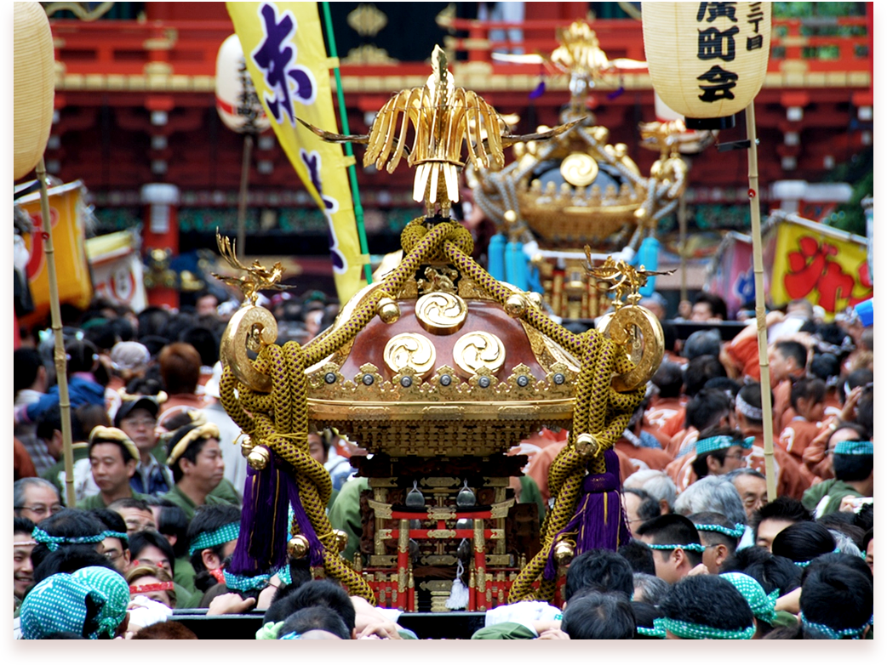
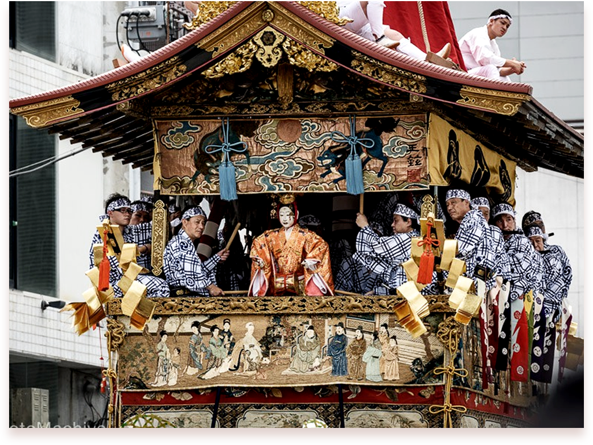
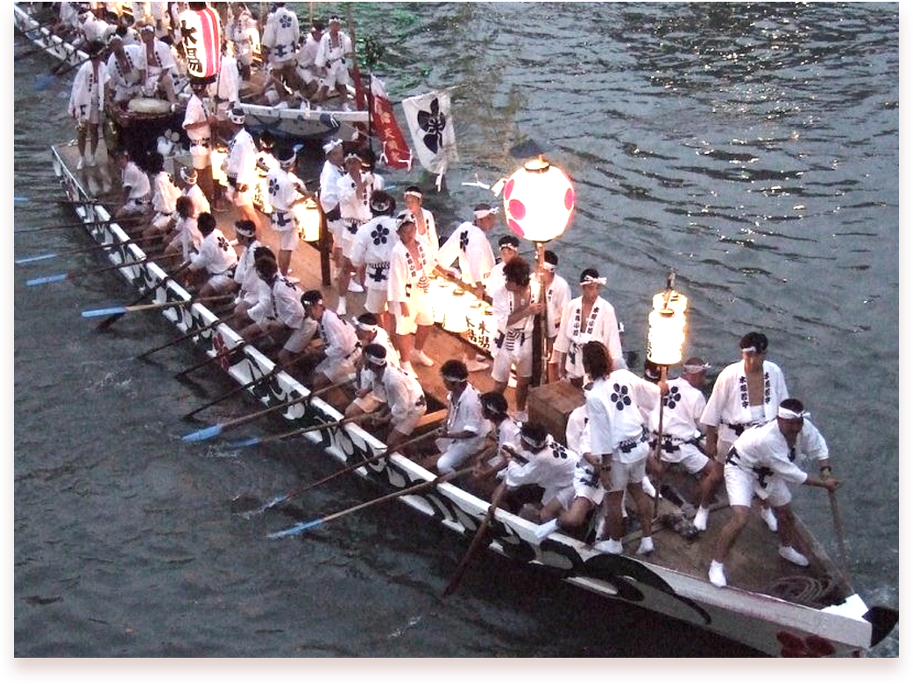

|  |
간다 마츠리는 매년 5월 15일 경 도쿄에서 열리고,
90개 이상의 가마가 선보일 정도로 규모가 큰 축제입니다. 다양한 행사 중 가마 행진이 가장 유명하며, 홀수년에는 혼마츠리, 짝수년에는 카게마츠리로 진행됩니다. 에도 시대에는 일반인들이 에도 성에 출입 가능했던 유일한 마츠리였다고 합니다. 도쿠가와 이에야스가 세키가하라 전투에서 승리한 것을 기념으로 시작했다고 합니다. |
|---|
|
기온 마츠리는 매년 7월 교토에서 열리는
여름을 알리는 축제입니다. 과거, 기후가 습한 일본은 여름에 역병이 발생하여 많은 사람들이 사망하였고, 무더운 교토의 전염병을 퇴치하는 의식에서 시작되었다고 합니다. |
 |
|---|
|  |
텐진 마츠리는 매년 7월 24-25일 오사카에서 열리는 여름을 알리는 축제입니다. 텐진 마츠리의 여러 행사 중 백미는 배에 신을 모시고 강을 거슬러 올라가는 후나토교 행사와 마츠리의 마지막을 수놓는 불꽃놀이입니다. 949년 덴만구 신사가 건립된 다음 해 6월 1일 스가와라노미치자네의 영을 진정시키려는 의도에서 무기인 가미호코를 바다에 띄어서 그것이 닿은 해변에서 의식을 치른 데서 비롯되었습니다. |
|---|